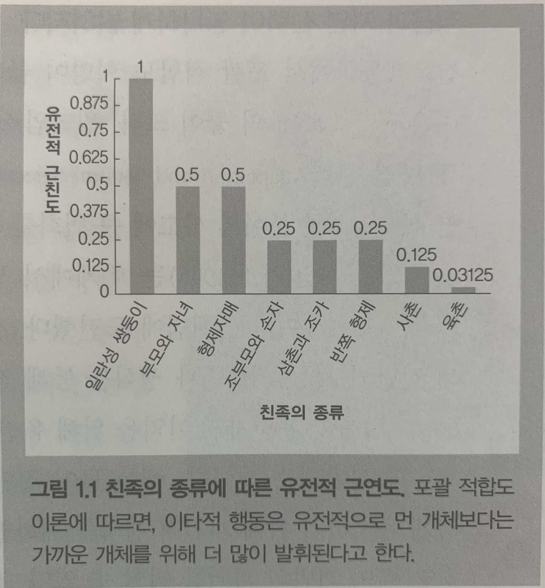
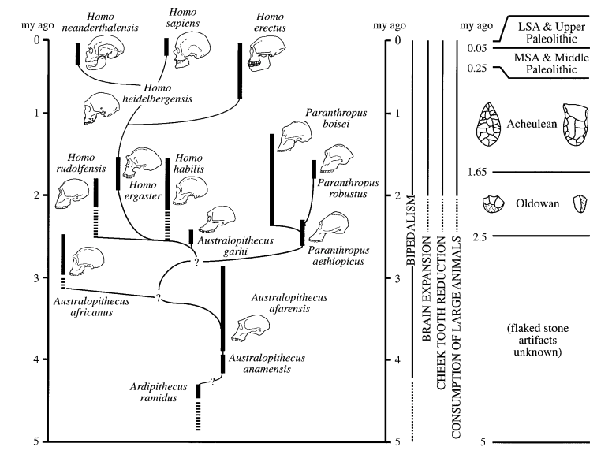
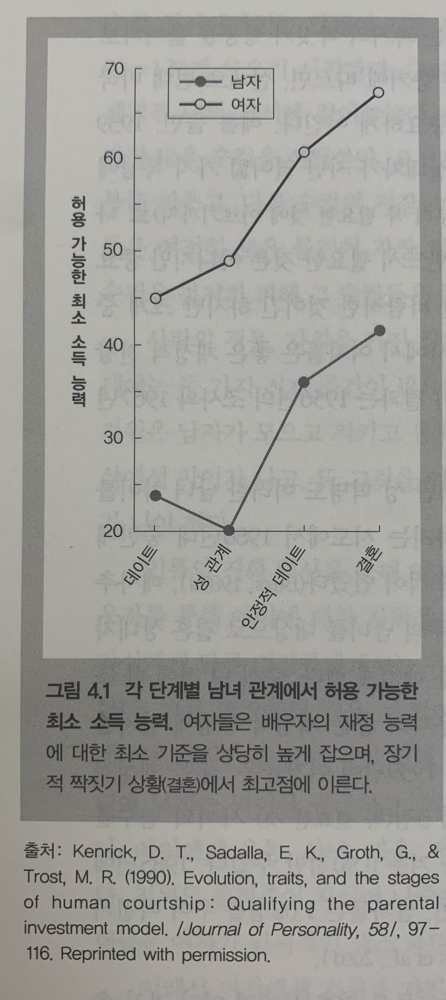

L2. 인간은 왜 이런식으로 생각하고 느끼고 행동하는가?
진화심리학과 인간의 마음 구조
지난 강의 리뷰
- 다윈의 자연선택에 의한 진화이론에 대해 이해
- 다윈의 진화론이 확장되고 있는 영역과 확장 가능성에 대해서 이해
수업 목표
- 진화심리학의 발전 과정과 설명 방식에 대해 이해한다.
- 진화심리학이 다루는 다양한 인간 본성에 대해 이해한다.
- 창업자와 사용자로서의 마음과 행동에 숨어 있는 진화적 원인에 대해 고민해본다.

진화심리학의 탄생
⟪진화심리학⟫


진화심리학의 탄생
- 동물행동학에서 사회생물학까지
- 현생 인류의 기원
- 심리학 분야에서 일어난 기념비적 사건들
동물행동학 운동
- 자연 선택론은 신체 구조뿐만 아니라 사회적 생동을 포함해 모든 행동에도 적용할 수 있다고 생각한게 분명
- 첫 번째 증거: 모든 행동에는 그 기반이 되는 신체 구조가 필요
- 두 번째 증거: 선택의 원리를 이용해 어떤 행동 특성을 가지도록 종을 개량할 수 있다.
- 진화론의 관점에서 행동 연구에 초점을 맞춰 맨 처음 생겨난 분야가 동물행동학(ethology)
각인(Imprinting)
콘라드 로렌츠(동물행동학의 아버지)


동물행동학의 관심
- 행동에 미치는 즉각적인 영향(예컨대 어미의 움직임)
- 행동에 미치는 발달의 영향(예컨대 오리가 살아가는 동안 변화를 초래하는 사건들)
- 행동의 기능 또는 그것이 수행하는 적응적 목적(예컨대 새끼오리를 어미 가까이에 붙어 있게 하는 것, 이것은 살아남는 데 도움을 준다.)
- 행동의 진화적 기원 또는 계통발생학적 기원(예컨대 오리에게 각인 기제를 생겨나게 한 일련의 진홪거 사건들이 무엇이냐 하는 것)
동물행동학에서 진화심리학의 싹
말의 발굽이 말이 태어낸 평원에 적응한 것이고, 알에서 깨어나기 전에 물고기의 지느러미가 물에 적응한 것이라는 사실과 마찬가지로, 개인적 경험 이전에 우리에게 주어진 인지적, 지각적 범주 역시 환경에 적응한 것이다. - Lorenz, 1941
포괄적합도 혁명
- 윌리엄 해밀턴
- 포괄적합도 이론(Inclusive Fitness Theory) 1964년 이론생물학 저널에 실림.
- 고전적 적합도(어떤 개체가 유전자를 전달하는 직접적인 생식적 성공을 자손의 생산을 통해 측정하는 것)로 진화과정을 기술하기에 범위가 너무 좁다고 생각
- 유전자의 관점이라는 새로운 시대가 열림
친족의 유전적 근연도(relatedness)
유전자의 관점
만약 내가 유전자라면, 어떻게 하는게 나를 복제하는 데 도움이 되겠는가?
첫째, 내가 들어 있는 ‘운반 수단(vehicle)’, 곧 신체의 안녕을 보장하도록 노력할 수 있다.(생존)
둘째, 그 운반 수단이 생식을 하도록 유도할 수 있다.
셋째, 나의 복제본을 담고 있는 운반 수단의 생존과 생식/복제를 도울 수 있다.
물론 유전자는 생각이 없으며 이 일들 중 어느 것도 의식적으로 혹은 의도적으로 일어나진 않는다.
이기적 유전자


유전자 관점의 신세계
요점은 유전자가 선택의 기본 단위, 즉 생식 과정에서 온전한 형태로 전달되는 단위라는 것
복제 성공률을 증가시키는 효과를 낳는 유전자는 다른 유전자를 대체하면서 진화가 일어남(개체군 사고)
유전자의 관점에서 선택을 생각하자 다윈의 시대에는 알려지지 않았던 직관들이 많이 쏟아져나왔다.
이 관점은 가족, 이타성, 도움행동, 집단 형성, 공격성 등에 대해 생각하는 방식에 큰 영향을 미쳤다.
적응과 자연 선택
- 조지 윌리엄스
- 해밀턴의 포괄적합도 이론을 혁명의 수준으로 끌어올린 공이 크다고 평가됨
- 학계에 널리 받아들여지고 있던 ’집단 선택’이라는 개념에 도전하여 유전자 관점의 자연선택론을 공고히 함.
- 계량적 성격이 강한 해밀턴의 이론을 모든 사람이 이해할 수 있도록 명확한 산문체로 해석
- ’부담스러운 개념’이라고 지칭한 적응을 신중하게 분석
- 적응은 생식적 성공에 직접적으로 혹은 간접적으로 도움을 주는, 특정 문제에 대해 진화한 해결책으로 정의
- 적응이 남용되는 것을 우려(ex. 날치가 점프해서 다시 물로 들어가는 현상)

사회생물학 논란
- 해밀턴의 포괄적합도 이론이 발표되고 11년후 에드워드 윌슨이라는 하버드 생물학자가 ⟪사회생물학: 새로운 종합⟫이라는 책으로 다윈이 촉발한 분노에 필적할 만한 과학적, 대중적 논란을 불러일으켰다.
- 개미에서부터 사람에 이르기까지 다양한 종들을 살펴보면서 똑같은 기본적 설명 원리를 모든 종에 적용할 수 있다고 주장
- 사회생물학의 이론적 도구는 이미 다른 사람들이 개발한 것
- 책 말미 29페이지에 불과한 사람에 관한 장에 대해서 대중들의 반발이 심했음.
- 공개 강연장에서 고함을 지르고 방해를 했으며, 한번은 머리 위에 물을 끼얹기까지 했다.

현생 인류의 기원
현생 인류의 진화의 주요 사건들
- 8500만년전 : 영장류라는 새로운 포유류 계통 진화
- 700~600만년전 : 사람족 계통이 침팬지와의 공통조상에서 분기
- 440만년전 : 이족보행의 진화
- 250만년전 : 조야한 도구가 처음 등장(올도완 석기)
- 180만년전 : 이족보행 및 도구사용, 호모 에렉투스, 아프리카에서 아시아로 진출
- 160~100만년전 : 불의 사용
- 150만년전 : 아슐리안 석기 발달(주먹도끼)
- 120만년전 : 뇌의 크기가 커지기 시작 2배 이상 커져 현생 인류와 비슷해짐(50만년~10만년전 사이)
- 20만년전 : 네안데르탈인 유럽 서아시아 지배, 호모 사피엔스 출현
- 3만년: 네안데르탈인 멸종
네안데르탈인은 왜 멸종했는가?

네안데르탈인은 왜 멸종했는가?
- 4~5만년 전 창조적 폭발이라고 부르는 큰 변화가 일어남
- 도구와 문화가 다양해짐.
- 그러나 이러한 폭발은 ’호모 사피엔스’에 국한되어 나타났으며 네안데르탈인에는 해당되지 않음.
- 아프리카에서 기원한 호모 사피엔스가 유럽 아시아로 퍼져 나가며 유럽의 네안데르탈인을 경쟁에서 이김.(경쟁이 반드시 잔혹한 전쟁을 의미하지는 않는다.)
Tip
당시 기후적 변화로 인해 유럽에 살던 네안데르탈 인의 거주지가 갑작스레 줄어들고 우연적인 원인으로 멸종했다고 보는 가설도 있음.
심리학 분야에서 일어난 기념비적 사건들
- 프로이트, 윌리엄 제임스
- 진화론에 큰 영향을 받은 심리학 이론들(본능에 대한 강조)
- 행동주의
- 1920년대부터 약 50년동안 심리학계를 지배, 진화론과 등을 돌림
- 본능에 대한 거부, 강화 효과를 통한 학습에 대한 맹신
- 인지혁명
- 가르시아 효과
- 인지 현상을 정보처리 과정으로 보는 입장
행동주의의 모토 by B.F. Skinner

행동주의에 대한 반발, 가르시아 효과
Harry Harlow의 애착 실험(1971)

인지혁명
- 학습의 기본 법칙이 흔들림
- 노엄 촘스키는 모든 언어에 통용되는 보편적 ‘언어기관’의 존재를 설득력 있게 주장함.
- 컴퓨터와 ’정보 처리 은유’의 등장
인지 혁명은 이제 정보 처리와 거의 동일해졌다: 인지적 기술은 그 기제가 어떤 종류의 정보를 입력으로 받아들이고, 그 정보를 변화시키는 데 어떤 절차를 사용하며, 그러한 절차가 어떤 종류의 데이터 구조(표현)를 바탕으로 작동하고, 어떤 종류의 표현 혹은 행동을 출력으로 내놓는지 명시한다.(Tooby & Cosmides, 1992, p. 64)
영역 일반성 가정
- 대다수의 인지심리학자들이 행동주의자들의 패러다임에서 물려받은 불행한 가정
- 행동주의자들이 주장한 영역 일반적 학습과정은 단순히 영역 일반적 인지기제로 대체
- 여기에는 인지 기제가 특별히 처리하도록 설계된 특별한 종류의 정보가 있을지도 모른다는 개념이 누락
- 인간의 인지 기계의 이미지는 입력되는 정보는 어떤 것이건 처리하도록 설계된 거대한 컴퓨터였다.
- 영역 일반성 가정의 문제 : 조합의 폭발적 증가
조합의 폭발적 증가
- 1분 동안에 100가지 행동 중 하나를 할 수 있다고 가정
- 2분 동안 할 수 있는 행동은 1만 가지
- 3분 동안에 할 수 있는 행동은 100만 가지
- 특별한 프로그래밍이 없으면 간단한 과제조차 해결하지 못하게 됨.
- 진화론이 이 특별한 프로그래밍 방법을 구체적으로 제시함.
진화심리학의 탄생
진화생물학과 심리학의 인지혁명이 만나서 탄생할 진화심리학은 어떤 특징을 가지고 있을까?

진화심리학 기초
진화심리학 기초
- 인간 본성의 기원
- 진화한 심리 기제의 기초
- 진화 가설 검증 방법
- 진화 가설 검증을 위한 자료원
- 적응문제 찾기
진화론적 분석의 여러 단계
인간 본성의 기원
진화적 적응 환경(EEA)
Environment of Evolutionary Adaptedness
- 특정 적응을 만들어내는 데 필요한 진화 기간에 일어난 선택 압력들의 통계적 종합을 가리킨다.
- 각 적응의 진화적 적응 환경은 긴 진화 시간 동안 적응을 빚어내는 데 관여하는 선택의 힘들 혹은 적응 문제들을 가리킨다.
- 예를 들어, 눈의 진화적 적응 환경은 수억 년에 걸쳐 시각계의 각 요소를 만들어낸 특정 선택 압력들을 가리킨다.
- 두발 보행의 진화적 적응 환경은 약 440만 년 전으로 거슬러 올라가는 훨씬 짧은 시간에 걸쳐 작용한 선택 압력들을 포함한다.
- 진화적 적응 환경이 특정 시간이나 장소를 가리키는 게 아니라, 적응을 빚어낸 선택의 힘들을 가리킨다는 사실이다.
인간 본성의 기원
| 산물 | 간략한 정의 |
|---|---|
| 적응 | 진화 기간에 개체군 내에 존재하는 대체 설계보다 생존이나 생식 문제를 해결하는 데 훨씬 도움이 되었기 때문에 자연 선택을 통해 나타난, 유전되고 신뢰할 수 있게 발달하는 특성; 예: 탯줄 |
| 부산물 | 적응 문제를 해결하지 못하고, 기능적 설계르르 갖지 못한 특성: 이것은 기능적 설계를 가진 특성과 함께 ’전달’되는데, 우연히 그러한 적응과 짝을 이루었기 때문이다; 예: 배꼽 |
| 잡음 | 우연한 돌연변이, 돌발적이고 전례가 없는 환경 변화, 발달 동안에 일어나는 우연 효과와 같은 힘 때문에 생겨난 임의 효과; 예: 어떤 사람의 특별한 배꼽모양 |
진화 가설을 만들고 검증하는 두 전략
전략 1: 이론 주도형 또는 ‘하향식’ 전략
- 1단계 : 기존의 이론에서 가설을 이끌어낸다.
- 예: 부모의 투자 이론에서 여자는 남자보다 자식에게 의무적인 투자를 더 많이 하기 때문에, 배우자를 선택할 때 더 까다롭거나 차별적인 경향이 있다는 가설을 이끌어 낼 수 있다.
- 2단계 : 가설을 토대로 한 예측을 검증한다.
- 예: 여자는 남자의 속성과 헌신을 평가하기 위해 섹스에 동의하기 전에 시간을 더 끌고 더 엄격한 기준을 적용할 것이라는 예측을 검증하는 실험을 한다.
- 3단계 : 경험적 결과가 예측을 확인해주는지 평가한다.
- 예: 여자는 섹스에 동의하기 전에 시간을 더 끌고 더 엄격한 기준을 적용한다(Buss & Schmitt, 1993; Kennair et al. 2009).
진화 가설을 만들고 검증하는 두 전략
전략 2: 관찰 주도형 또는 ‘상향식’ 전략
- 1단계 : 알려진 관찰을 바탕으로 적응적 기능에 대한 가설을 개발한다.
- 예: A. 관찰: 남자는 배우자를 선택할 때 여자보다 외모를 훨씬 중요시하는 것처럼 보인다.
- B. 가설: 여자의 외모는 조상 남자들에게 생식력에 대한 단서를 제공했다.
- 2단계 : 가설을 토대로 한 예측을 검증한다.
- 예: 남자가 느끼는 매력의 기준이 여자의 생식력에 대한 단서를 바탕으로 하는지 결정하는 실험을 한다.
- 3단계 : 경험적 결과가 예측을 확인해주는지 평가한다.
- 예: 남자는 생식력과 상관관계가 있다고 알려진 허리 대 엉덩이 비율이 낮은 여자를 매력적으로 느낀다(Dixon et al., 2010; Singh, 1993).
진화한 심리 기제
- 진화한 심리 기제는 진화의 역사를 통해 그것이 특정 생존 문제나 생식 문제를 반복적으로 해결했기 때문에 그런 형태로 존재한다.
- 진화한 심리 기제는 아주 좁은 범위의 정보만 받아들이도록 설계되었다.
- 진화한 심리 기제의 입력은 생물에게 그 생물이 맞닥뜨린 특정 적응문제를 알려준다.
- 진화한 심리기제의 입력은 결정 규칙을 통해 출력으로 변한다.
- 진화한 심리 기제의 출력은 생리적 활동이나 다른 심리 기제로 보내는 정보나 겉으로 드러나는 행동이 될 수 있다.
- 진화한 심리 기제의 출력은 특정 적응 문제의 해결을 지향한다.
진화한 심리 기제의 중요한 성질
- 진화한 심리 기제는 “마음을 그 자연적 관절 부위에서 쪼개는” 비자의적 기준을 제공한다.
- 진화한 심리 기제는 문제 특정적 경향이 있다.
- 사람은 진화한 심리 기제를 많이 갖고 있다.
- 진화한 심리 기제의 특정성, 복잡성, 무수함은 사람에게 행동의 유연성을 제공한다.
- 영역 특정적 심리 기제를 넘어
웨이슨의 선택 과제 실험
한 쪽 면에 짝수가 적혀있으면 반대쪽면은 빨간색이다.
어떤 카드를 뒤집어야 합니까?
웨이슨의 선택 과제 실험
나이트 클럽에 입장할때 카드를 나눠주는데 한쪽면에는 음료의 종류, 반대쪽 면에는 손님의 나이가 적혀있다.
맥주를 마시려면 20세 이상이어야 한다.
누구의 카드를 확인해봐야 합니까?
웨이슨의 선택 과제 실험
실험결과와 해석
두 과제의 논리적 구조는 동일하지만 사람들은 사회적 맥락에서 부정을 저지른 사람을 찾아내는 데 특화된 마음의 모듈을 가지고 있다.
일명 ‘사기꾼 탐지 모듈’
학습과 문화와 진화한 심리기제
“우리가 관찰하는 사람의 행동은 진화가 아니라 학습과 문화가 그 원인이 아닐까? 사람의 행동은 본성이 아니라 양육의 산물이 아닌가?”
- 본성 대 양육
- 선천적인 것 대 학습된 것
- 생물학적인 것 대 문화적인 것
본성과 양육 논쟁에 대한 진화심리학의 답변
어떤 것에 ‘학습된’ 것이라는 딱지를 붙인다고 해서 설명이 되는 것은 아니다. 그것은 단지 환경의 입력이 그 생물을 어떤 방식으로 변화시킨다고 기술하는 것에 지나지 않는다.
’학습된 것’과 ’진화한 것’은 서로 경쟁하는 설명이 아니다. 오히려 학습에는 특수하게 진화한 심리 기제가 일어나는 게 필요하다. 진화한 학습 기제는 종종 본질적으로 특수하다.

진화심리학의 주제들
진화심리학의 주제들
- 생존 문제
- 성과 짝짓기 문제
- 양육과 친족 문제
- 집단 생활의 문제
- 지위, 명성, 사회적 지배성
생존 문제
- 자연의 적대적인 힘에 대항하기
- 식량 부족, 독소, 포식동물, 기생충, 질병, 혹독한 기후 등
남녀의 서로 다른 능력
- 여성은 공간적 위치 기억을 포함한 과제를 남자보다 잘하며, 남자는 물체의 심적 회전, 항행, 지도 판독을 포함하는 공간 과제를 여자보다 잘함.


인류는 어떻게 음식물을 구했을까?
- 남성: 사냥, 여성: 채집

사냥가설과 채집가설
- 사냥 가설
- 사람은 어떤 영장류보다 고기를 훨씬 많이 먹는다.(침팬지의 고기 비중 4%, 인간 20~40%)
- 유인원의 창자는 대장 위주 길고 구불구불 섬유질을 함유한 식물 소화에 특화, 인간은 작은 창자가 압도적인 비율을 차지 단백질 소화에 특화
- 식량 공급 가설, 과시 가설 등 부가 이론
- 채집 가설
- 석기는 사냥이 아니라 채집을 위해 발명되었다.
- 채집을 위한 도구의 사용이 진화의 원동력
Note
채집활동이 중요함에도 채집가설은 사냥가설에 비해 영장류 계통에서 인간이 갈라져 나온 것을 제대로 설명하지 못함. 채집이 중요한 에너지원이라면 왜 남성들이 사냥을 관두고 채집에 몰두하지 않는 것일까? 채집가설은 동맹과 협업의 진화를 설명하는데도 어려움이 있다.
안 좋은 물질이 몸에 들어오거나 들어오려 할 때

살기 좋은 곳

주거와 경관 선호
- 1단계 : 선택
- 서식지나 경치를 처음 보았을 때 더 자세히 살펴보느냐, 그냥 딴 곳으로 가느냐(식당에서)
- 2단계 : 정보 수집
- 1단계에서 긍정적이었다면 환경을 자세히 살펴보면서 자원과 잠재적 위험도를 조사한다.
- 이 과정에서 사람들은 신비한 것을 좋아함.
- 위험요소도 평가
- 3단계 : 이용
- 얼마나 오래 머무를 것인지 결정
성과 짝짓기 문제
- 부모투자와 성선택
- 장/단기 짝짓기 전략
Trivers-Willard 가설과 부모투자
- 부모가 좋은 조건에 있고, 짝짓기 게임에서 성공할 가능성이 높은 아들을 낳을 기회가 있을 때에는 더 많은 아들을 낳고 아들에게 더 많은 투자를 하려고 한다.
- 반대로, 부모가 나쁜 조건에 있거나 투자할 자원이 적을 때에는 딸에게 더 많은 투자를 하려고 한다.
트리버스-윌라드 가설은 입증되었나?
일부 연구에서는 효과가 나타났지만 다양한 문화권에서 반복적으로 시행한 결과 트리버스-윌라드 효과가 강건하게 나타나지는 않았다.
부모투자와 성선택
생식 세포의 투자 불균형이 이후 생애사에서 확대 재생산됨
정자와 난자의 크기 차이
- 난자 : 0.2mm
- 정자 : 4~5µm ≅ 0.004mm
축구장과 사람의 크기
출발선이 다른 게임, 당연히 전략도 다를 것
누구와 결혼할 것인가? 누구와 사귈 것인가?
누구와 결혼할 것인가? : 장기적 전략
누구와 사귈 것인가? : 단기적 전략
여성과 남성은 정도에 차이가 있지만 모두 두 전략을 활용한다.
여성과 장기적 전략
| 적응 문제 | 진화한 짝짓기 선호 |
|---|---|
| 투자 능력이 있는 배우자 선택하기 | 좋은 재정적 전망, 사회적 지위, 더 많은 나이, 야심/근면성, 신체 크기, 강한 힘, 운동능력 |
| 투자 의향이 있는 배우자 선택하기 | 신뢰성과 안정성, 사랑과 헌신의 단서, 아이들과 긍정적인 상호작용 |
| 육체적으로 여자와 자식을 보호할 능력이 있는 배우자 선택하기 | 몸 크기(키), 용감성, 운동능력 |
| 훌륭한 양육기술을 보여주는 배우자 선택하기 | 신뢰성, 정서적 안정성, 친절, 아이들과 긍정적인 상호작용 |
| 조화롭게 함께 살수 있는 배우자 선택하기 | 비슷한 가치, 비슷한 나이, 비슷한 성격 |
| 건강한 배우자 선택하기 | 육체적 매력, 대칭성, 건강, 남성성 |
남성의 장기적 전략
- 남자는 왜 결혼을 하려고 할까?
- 배우자의 관심을 끄는데 성공할 가능성 증가
- 더 바람직한 배우자의 관심을 끄는 능력증가
- 친부라는 확신 증가
- 아이의 생존 가능성 증가
- 아버지의 투자를 통한 자식의 번식 성공률 증가
- 사회적 지위 상승
- 새로운 동맹 추가
재정능력에 대한 선호의 차이

여성과 남성의 단기적 전략
- 남자가 단기적 짝짓기에서 번식의 이득을 얻는다는 것은 너무나도 명백했기 때문에 과학자들은 여자가 단기적 짝깃기에서 이득을 얻을 가능성에 그다지 신경을 쓰지 않았다.
- 단기적 짝짓기는 수학적으로 두 가지가 필요하다. 단기적 짝짓기를 원하는 남자의 욕구는 거기에 응하려는 일부 여자가 없었다면 진화하지 못했을 것이다.
- 여자가 얻을 수 있는 적응적 편익 : 경제적 또는 물질적 자원, 유전적 편익, 배우자 교체 편익, 장기적 목표를 위한 단기적 짝짓기 등
일본의 매독 감염률이 증폭한 이유
일본의 젊은 남녀의 매독 환자 비율이 10년만에 12배가 되었음. 데이팅 앱을 원인으로 지목하고 있는데 기술이 남녀의 단기적 성전략의 동기 측면에서 기회를 열어준 셈이라고 평가해볼 수 있고, 추후 연구해볼 만한 가치가 있다.
양육과 친족문제
- 왜 어머니는 아버지보다 양육에 더 많이 투자하는가?
- 부성불확실성 가설
- 짝짓기 기회비용 가설
⟪부모의 보살핌의 진화⟫라는 책의 저자 Clutton-Brock은 “부모의 보살핌에 대한 책을 쓰는 동안 나는 내 아이들을 돌본 아내에게 가장 큰 빚을 졌다.”라고 재치있게 말했다.
부성불확실성 가설
- 수컷의 관점에서 볼때 다른 수컷이 암컷의 난자를 수정시켰을 가능성이 항상 있음.
- 만약 그렇다면 다른 수컷의 자식을 키우느라 자신의 자원을 쏟아붓는 큰 비용을 치르게 된다.
- 약간이라도 의심된다면 수컷이 자식의 양육에 자원을 투자해서 얻는 이득이 적을 수 있다.
- 부성 불확실성은 아비의 보살핌이 진화하는 것을 막지는 않지만 동물계에서 암컷이 수컷보다 자식에게 더 많은 투자를 하는 경향이 광범위하게 나타나는 이유를 설명
짝짓기 기회비용 가설
- 자식에게 쏟아부은 노력때문에 상실한 추가적 짝짓기 기회를 말한다.
- 일반적으로 여성은 많은 남성과 짝짓기를 하더라도 번식 결과를 직접 높일 수 없다.
- 짝짓기 풀에서 남자가 넘쳐나는 상황에서는 남자들이 단기적 짝짓기 전략을 추구하기 어렵다. 반면에 여자가 넘쳐날 때에는 남자들에게 짝짓기 기회가 더 많아진다.
유전적 근연도와 부모의 보살핌
- 태어난 아기가 누구를 닮았다고 이야기하는가?
- 데일리와 윌슨(1982)은 어머니는 아버지로 추정되는 남자에게 태어난 아기가 아버지를 닮았다고 말함으로써 친부라는 확신을 심어주려는 동기를 느낄것이라고 주장
- 미국에서 아기가 출생하는 장면 111건을 촬영한 테이프를 구해서 말소리를 분석.
- 자식이 자신과 닮지 않았다고 지각하는 남자는 배우자를 학대하는 경향이 더 강하다.
부모와 자식 간 갈등
- 대개 부모가 주고자 하는 것보다 자식이 더 많이 원하는 결과로 나타남.
- 형제자매가 있는 경우 부모는 균등하게 배분하는 것이 이상적이다.(둘다 자신과 50%씩을 공유하는 자식들이므로)
- 그러나 자식의 관점에서는 자신이 형제자매보다 가치가 2배 크기에 자신이 많이 받기 위해서 부모와 갈등을 빚는다.
- 심지어 자궁 속에서도 어머니와 자식 간의 갈등이 존재한다.
- 임신 초기에 수정란 중 최대 78%는 착상에 실패하거나 자연 유산된다.
포괄 적합도 이론
\[ c < rb \]
어떤 생물의 포괄적합도는 그 자신의 성질이 아니라, 그 행동이나 효과의 성질이다. 포괄 적합도는 개체 자신의 번식 성공률에다가 자신의 친척의 번식 성공률에 미치는 효과를 더한 것으로 계산하며, 각각의 요소에 적절한 근친계수로 가중치를 부여한다. - Dawkins, 1982, p.186
- 친족의 근연도에 주요 도움의 비율은 강한 관계를 보임.
친족 인식과 분류
- 친족에게 도움을 주려면 먼저 친족을 인식하는 능력이 필요하다.
- 우리는 냄새로 친족을 식별할 수 있다.
- 어머니와 아버지, 조부모, 이모, 고모는 모두 갓난아기가 입은 옷으 냄새를 맡음으로써 친족 아기의 냄새를 알아챌 수 있다.
- 사람들이 친족을 확인하는 데 사용하는 또 한 가지 방법은 친족용어다.
- 모든 문화에는 친족 분류 체계를 나타내는 특별한 용어가 있다.
고모, 이모, 삼촌, 외삼촌, 사촌의 투자
- 미국 대학생 285명 대상 조사
- 이모가 고모보다, 외삼촌이 삼촌보다 투자를 더 많이 함.(부성 불확실성)
- 고모와 이모는 삼촌이나 외삼촌보다 더 많이 투자.(성별 효과, 잉여자원을 어디에 투자하는냐?)
집단 생활의 문제
이타성 문제
상호 호혜성 문제
사기꾼(무임승차자) 탐지 능력
간접적 호혜성
값비싼 신호
6강에서 자세히 다룰예정
지위, 명성, 사회적 지배성
- 지위 추구에서 나타나는 남녀 차이
- 남성의 번식 성공 편차가 여성에 비해 매우 큼.
- 생식력이 있는 여성은 대부분 번식에 성공하지만 생식력이 있는 모든 남자가 번식에 성공하는 것 아님.
- 지배력과 지위 상승이 남자에게 성적 기회를 더 많이 제공하는 길은 두 가지가 있다.
- 첫째, 여자들은 지배적인 남자를 배우자로 선호한다.
- 둘째, 동성간 지배를 통해서 여자에 대한 성적 접근을 더 많이 얻는다.

강의 요약
강의 요약
- 진화심리학이 정립되게 된 과정에 대해서 학습
- 진화심리학의 원리와 설명 방식에 대해 이해
- 진화심리학에 다양한 주제가 있음을 확인


인간 본성의 과학적 이해